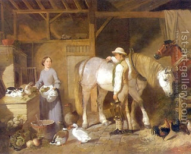

Pesachim 21 - Last hours before Passover
Earlier we learned that one must stop eating chametz midday before Passover, in fact, even one or two hours before that , depending on whose opinion you follow, Rabbi Meir or Rabbi Yehudah. Here is the exact rule.
As long as it is permitted to eat chametz, one may feed it to domestic animals, beasts in the field, and birds, sell it to a non-Jew, and generally benefit from you. Once the time has passed, all benefit is forbidden, even to light up a fire to warm oneself or an oven to cook.
That, however, does not look right. According to Rabbi Yehudah, there is the fifth hour when one cannot eat chametz but can still benefit from it, and according to our rule there is no such time. According to Rabbi Meir, it should say "as long as he eats," for otherwise "permitted" talks to one group of people, and "one may feed" to another!?
Indeed, this ruling belongs to neither one of them, but to Rabban Gamliel instead, who permits the Kohanim to eat their portion in the fifth hour. And why mention all animals separately? Because the wild animal hides the chametz, and because with a domestic animal he may forget to remove the leftovers. And why the birds? - After we mentioned both classes of animals, it would not be right to omit the birds either.
Art: Feeding Time For Farm Animals in Barn by John Frederick Herring Snr